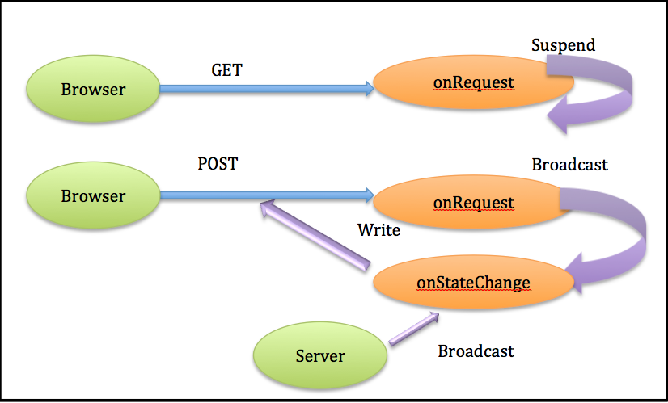
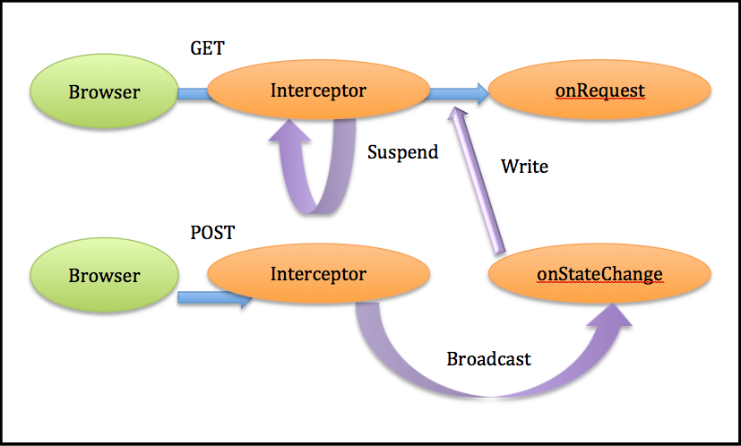
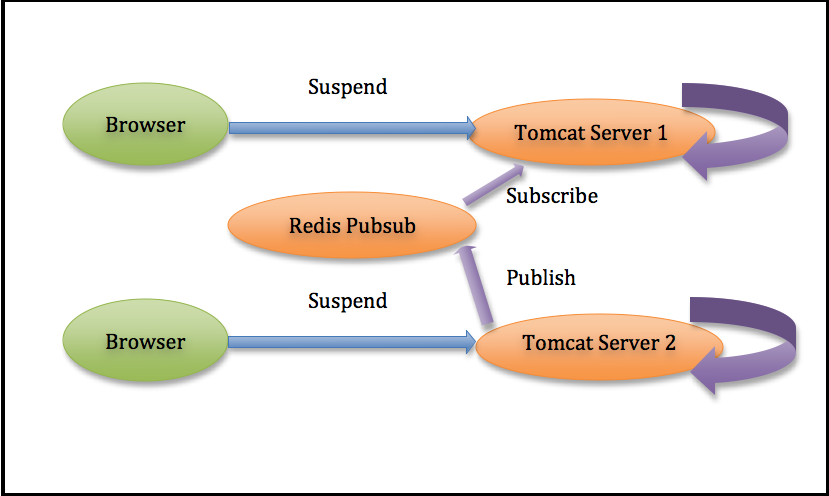

Introduction
The Atmosphere Framework is a Java/Javascript framework which allows the creation of portable asynchronous applications using Groovy, Scala and Java. The Atmosphere Framework ships with a JavaScript component supporting all modern browsers and several server components supporting all major Java-based WebServers. The aim of the framework is to allow a developer to write an application and let the framework discover the best communication channel between the client and the server, transparently.
For example, a developer can write an application that will use the WebSocket protocol when used with a browser or server that supports the protocol, and transparently fall back to HTTP in case the WebSocket protocol isn’t supported. For example, an Atmosphere application will work fine with Internet Explorer 6, 7, 8, and 9 using HTTP, and will use the WebSocket protocol when used with Internet Explorer 10.
To see the power of Atmosphere, let’s build a simple chat application. Let’s assume our chat application will only support a single chat room to make the logic simpler. First, let’s write the server side component. Atmosphere natively supports three components:
- atmosphere-runtime: the core module of Atmosphere. All other modules build on top of this one. This module exposes two simple APIs for building applications: AtmosphereHandler and Meteor. The AtmosphereHandler is a simple interface to implements, whereas the Meteor API is a class that can be retrieved or injected in Servlets based applications.
- atmosphere-jersey: An extension to the Jersey REST framework. This module exposes a new set of annotations, thus exposing the Atmosphere’s runtime functionality.
- atmosphere-gwt: An extension to the GWT framework.
The Server Side
For this article I will use the atmosphere-runtime to demonstrate how simple it is to write a simple asynchronous application. Let’s start with the server component using an AtmosphereHandler. The AtmosphereHandler is defined as shown in Listing 1.
Listing 1: AtmosphereHandler
public interface AtmosphereHandler {
void onRequest(AtmosphereResource resource) throws IOException;
void onStateChange(AtmosphereResourceEvent event) throws IOException;
void destroy();
}
The onRequest method is called every time a request gets mapped to the path associated with the AtmosphereHandler. The path is defined by annotating an implementation of AtmosphereHandler.
@AtmosphereHandlerService(path = "/{path}")
In Atmosphere, an AtmosphereResource represents a physical connection. An AtmosphereResource can be used to retrieve information about the request, execute action on the response, and more importantly be used to suspend the connection during the onRequest execution. A WebServer needs to be advised when a connection needs to stay open for future actions (e. g. for WebSockets), and also when it needs to be upgraded to support the protocol, for http (streaming, long-polling, jsonp or server side events) to keep the connection open for future action.
{kind=link}
The onStateChange method (Figure 1) will be invoked by Atmosphere when:
a broadcast operation occurs and an action needs to be taken. A Broadcaster always initiates a broadcast operation. It can be seen as channel of communication. An application can create many communication channels and retrieve them using the BroadcasterFactory class. An AtmosphereResource is always associated with one or several Broadcaster. We can also see Broadcasters as an event queue, where you can listen and get notified every time new events get broadcasted. Broadcast can happens from an onRequest, onStateChange or anywhere on the server side. The connection has been closed or timed out (no activity occurs on it).
Visually it can be seen as: finally, the destroy method will be called when Atmosphere is un-deployed or stopped. Complicated? Fortunately for us, the framework ships with AtmosphereHandlers that can be used in almost all scenarios, which allows the developer to focus on the application logic whilst it already handles the connection lifecycle. Let’s use the OnMessage
AtmosphereHandler to write our application (Listing 2).Listing 2: OnMessage
@AtmosphereHandlerService(path="/chat",
interceptors = { AtmosphereResourceLifecycleInterceptor.class,
BroadcastOnPostAtmosphereInterceptor.class
})
public class ChatRoom extends OnMessage<String> {
private final ObjectMapper mapper = new ObjectMapper();
@Override
public void onMessage(AtmosphereResponse response, String message) throws IOException {
response.write(mapper.writeValueAsString(mapper.readValue(message, Data.class)));
}
}
The main idea here is to delegate as much as possible of the connection life cycle to Atmosphere’s ready-to-use component. First, we annotate the ChatRoom class with the @AtmosphereHandlerService annotation and define the path and the interceptors. AtmosphereInterceptors can be seen as Filters that always gets invoked before and after AtmosphereHandler#onRequest. AtmosphereInterceptor is useful for manipulating the request/response, handling the life cycle, etc. For example, the suspend and broadcast (Figure 2).
{kind=link}
As described above, two interceptors can be used to first, suspend the request (AtmosphereResourceLifeCycleInterceptor), and then broadcast the data received on every POST (BroadcastOnPostAtmosphereInterceptor). Great, we can focus only on the application’s logic. Now instead of writing our own complete AtmosphereHandler, we can extend the OnMessage<T> handler, which delegates the broadcast operation to the onMessage method. For our chat application, it just means we write what we receive. If we have 50 connected users, that means the onMessage will be called 50 times so the 50 users gets the message. We are using JSON between the client and the server. The client sent:
{"message":"Hello World","author":"John Doe"}
and the server sent back to the connected browsers
{"message":"Hello World","author":"John Doe","time":1348578675087}
Listing 3
public final static class Data {
private String message;
private String author;
private long time;
public Data() {
this("","");
}
public Data(String author, String message) {
this.author = author;
this.message = message;
this.time = new Date().getTime();
}
public String getMessage() {
return message;
}
public String getAuthor() {
return author;
}
public void setAuthor(String author) {
this.author = author;
}
public void setMessage(String message) {
this.message = message;
}
public long getTime() {
return time;
}
public void setTime(long time) {
this.time = time;
}
}
The Client Side – atmosphere.js
That’s it for the server side. Now let’s use the atmosphere.js to write the client side. First, let’s look at the code (Listing 4).Listing 4: Atmosphere.js Client Code
$(function () {
"use strict";
var header = $('#header');
var content = $('#content');
var input = $('#input');
var status = $('#status');
var myName = false;
var author = null;
var logged = false;
var socket = $.atmosphere;
var subSocket;
var transport = 'websocket';
// We are now ready to cut the request
var request = { url: document.location.toString() + 'chat',
contentType : "application/json",
trackMessageLength : true,
shared : true,
transport : transport ,
fallbackTransport: 'long-polling'};
request.onOpen = function(response) {
content.html($('>p<', { text: 'Atmosphere connected using ' + response.transport }));
input.removeAttr('disabled').focus();
status.text('Choose name:');
transport = response.transport;
if (response.transport == "local") {
subSocket.pushLocal("Name?");
}
};
request.onTransportFailure = function(errorMsg, request) {
jQuery.atmosphere.info(errorMsg);
if (window.EventSource) {
request.fallbackTransport = "sse";
transport = "see";
}
header.html($('<h3>', { text: 'Atmosphere Chat. Default transport is WebSocket, fallback is ' + request.fallbackTransport }));
};
request.onMessage = function (response) {
// We need to be logged first.
if (!myName) return;
var message = response.responseBody;
try {
var json = jQuery.parseJSON(message);
} catch (e) {
console.log('This doesn\'t look like a valid JSON: ', message.data);
return;
}
if (!logged) {
logged = true;
status.text(myName + ': ').css('color', 'blue');
input.removeAttr('disabled').focus();
subSocket.pushLocal(myName);
} else {
input.removeAttr('disabled');
var me = json.author == author;
var date = typeof(json.time) == 'string' ? parseInt(json.time) : json.time;
addMessage(json.author, json.message, me ? 'blue' : 'black', new Date(date));
}
};
request.onClose = function(response) {
logged = false;
}
subSocket = socket.subscribe(request);
input.keydown(function(e) {
if (e.keyCode === 13) {
var msg = $(this).val();
if (author == null) {
author = msg;
}
subSocket.push(jQuery.stringifyJSON({ author: author, message: msg }));
$(this).val('');
input.attr('disabled', 'disabled');
if (myName === false) {
myName = msg;
}
}
});
function addMessage(author, message, color, datetime) {
content.append('<p><span style="color:' + color + '">' + author + '</span> @ ' +
+ (datetime.getHours() < 10 ? '0' + datetime.getHours() : datetime.getHours()) + ':'
+ (datetime.getMinutes() < 10 ? '0' + datetime.getMinutes() : datetime.getMinutes())
+ ': ' + message + '</p>');
}
});
There is a lot of extra in the code in Listing 4, so let’s only describe the atmosphere.js important parts. For more information, read this. First, we initialize a connection (called socket in the code)
var socket = $.atmosphere;
The next step is to define some functions callback. For this article, let’s define only a one subset. First, we define an onOpen function that gets invoked when the underlying transport is connected to the server. There we just display the transport that was used for connecting to the server. The transport is specified on the request object, which is defined as:
var request = { url: document.location.toString() + 'chat',
contentType : "application/json",
transport : transport ,
fallbackTransport: 'long-polling'};
Here we want to use the WebSocket transport by default, and fallback to long-polling in case WebSocket is not supported either by the browser or the server. In our onOpen function we just displayed which transport was used. Note: You can also change the transport when WebSocket is failing by adding an onTransportFailure function:
request.onTransportFailure = function(errorMsg, request) {
if (window.EventSource) {
request.fallbackTransport = "sse";
transport = "see";
}
Here for demonstration purposes, we shall look for the EventSource object (HTML5 Server Sides Events) and, if available, switch the transport to use it. The beauty here is: you don’t need to use a special API. All transports are handled the same way using the atmosphere.js.
Next we define the onMessage function, which will be invoked every time we receive data from the server:
request.onMessage = function (response) {
.....
}
Here we just display the received message. To connect and send data to the server, all we need to do is to invoke:
subSocket = socket.subscribe(request);
Once subscribed, we are ready so receive and send data. To send data, we are using the subSocket object returned from the subscribe operation. If the WebSocket transport is in use, the subSocket will reference the WebSocket connection (because the protocol is bi-directional), where for all other transport, a new connection will be opened every time the push operation is called:
subSocket.push(jQuery.stringifyJSON({ author: author, message: msg }));
Next, let’s add support for a really nice Atmosphere feature, which is the ability to share a connection amongst open windows/tabs. All you need to do in Atmosphere is to set the shared variable to “true” when doing a request:
var request = { url: document.location.toString() + 'chat',
contentType : "application/json",
transport : transport ,
shared : true,
fallbackTransport: 'long-polling'};
Now every time a new window or tab gets opened and the same page opened, the connection will be shared. To get notified when the “master” tabs/windows (the open that opened first), just implement the
request.onLocalMessage = function(message) {
....
}
Tabs/Windows can also communicate directly by using the following function.
subSocket.pushLocal(...)
Fully functional – not just yet!
That’s it, we now have a fully functional chat application. But there are two problems with the current application. The first one is related to Proxy/Firewall. Occasionally Proxy/Firewall doesn’t allow a connection to stay inactive for a longer period of time, and usually the connection gets closed automatically by the Proxy. For a suspended connection, it means the client will have to reconnect every time a connection gets closed. One possible solution is to keep the suspended connection active by sending some bytes between the client and the server. Fortunately for us, all we need to do is to add the HeartbeatInterceptor, which will keep the connection active for us, transparently (Listing 5).
Listing 5: HeartbeatInterceptor
@AtmosphereHandlerService(path = "/chat",
interceptors = { AtmosphereResourceLifecycleInterceptor.class,
BroadcastOnPostAtmosphereInterceptor.class,
HeartbeatInterceptor.class
})
public class ChatRoom extends OnMessage<String> {
Now the HeartbeatInterceptor will periodically write bytes (whitespace) to the connection to keep it active. Unfortunately, there are still Proxies that could close the connection after a period of time (active or not) or a network issue could arise and the browser will have to reconnect. During the process of reconnect, a broadcast operation can always happen and the browser may never get the broadcast because the connection is in the process of connecting. Under that scenario it will mean the browser has missed a message (or lost it). For some applications, it may not be problematic, but for some missing message is a major issue. Fortunately Atmosphere supports the concept of BroadcasterCache. Installing a BroadcasterCache will allow a Browser to never miss/lose messages. When the Browser reconnects, Atmosphere will always look in the cache and make sure all messages that occurred during the reconnection time are send back to the browser. The BroadcasterCache API is pluggable and Atmosphere ships with ready-to-use implementation. Hence, for our Chat application, all we need to do is:
@AtmosphereHandlerService(path = "/chat",
broadcasterCache = UUIDBroadcasterCache.class,
interceptors = { AtmosphereResourceLifecycleInterceptor.class,
BroadcastOnPostAtmosphereInterceptor.class,
HeartbeatInterceptor.class
})
public class ChatAtmosphereHandler extends OnMessage<String> {
Our application is now guaranteed to never miss or lose a message. The second issue we need to address is intermixed messages, depending on the WebServer used. The Browser may receive two messages in one chunk, one and a half messages, etc. This is problematic because let’s say we use JSON for encoding our message, the Browser will fail to decode messages that takes the form of:
{"message":"Hello World","author":"John Doe","time":1348578675087}{"message":"Cool Man","author":"FooBar","time":1348578675087}
{"message":"Hello World","author":"John Doe
{"message":"Hello World","author":"John Doe","time":1348578675087}{"message":"Cool Man","author"
var json = jQuery.parseJSON(message);
Listing 6
@AtmosphereHandlerService( path = "/chat",
broadcasterCache = UUIDBroadcasterCache.class,
interceptors = { AtmosphereResourceLifecycleInterceptor.class,
BroadcastOnPostAtmosphereInterceptor.class,
TrackMessageSizeInterceptor.class,
HeartbeatInterceptor.class
})
public class ChatRoom extends OnMessage<String> {
On the client side, all we need to do is to set the trackMessageLength on the request object
var request = { url: document.location.toString() + 'chat',
contentType : "application/json",
logLevel : 'debug',
shared : true,
transport : transport ,
trackMessageLength : true,
fallbackTransport: 'long-polling'};
To The Cloud!
We are now ready to deploy our application into the cloud…well, not yet. The next feature we need to add is how messages are getting distributed amongst servers when deployed in a Cloud. The problem we need to solve can be seen in Figure 3.

Under that scenario, when a broadcast action occurs on Tomcat Server 1, Tomcat Server 2 will never get the messages. For our application, that means some users won’t see other messages, which is clearly a major issue. Not only for a chat, but for any application deployed into the Cloud we need to solve that issue. Fortunately for us, Atmosphere supports “Cloud-Enabled” or “Cluster-enabled” Broadcaster that can be used to propagate message between server instance. Atmosphere currently natively supports well known technologies like Redis PubSub, Hazelcast, JGroups, JMS, XMPP (for example using Gmail servers). For this article, let’s use Redis PubSub (Figure 4).
{kind=link}
The Redis PubSub allows us to connect to a Redis instance and subscribe to some topics. For our application, all we need to do is to create a ‘chat’ topic and subscribe all our servers to it. Next we just need to tell our application to use the RedisBroadcaster instead of the normal Broadcaster. As simple as Listing 7.
Listing 7
@AtmosphereHandlerService(path = "/chat",
broadcasterCache = UUIDBroadcasterCache.class,
broadcaster = RedisBroadcaster.class,
interceptors = { AtmosphereResourceLifecycleInterceptor.class,
BroadcastOnPostAtmosphereInterceptor.class,
TrackMessageSizeInterceptor.class,
HeartbeatInterceptor.class
})
public class ChatRoom extends OnMessage<String> {
By just adding the RedisBroadcaster we just enabled message sharing between servers, making our chat application “Cloud-aware” in a single line. On the client side we don’t have to change anything. We now have a fully functional application:
- Transparently supporting all existing WebServers
- Transparently supporting all existing Browsers
- Cloud/Cluster enabled
Using the @ManagedService annotation
Now that you understand how to build an Atmosphere application and how it works under the hood, you can simplify your server side class by using the @ManagedService
Listing 7
@ManagedService(path = "/chat")
public class Chat {
private final Logger logger = LoggerFactory.getLogger(Chat.class);
@Ready
public void onReady(final AtmosphereResource r) {
logger.info("Browser {} connected.", r.uuid());
}
@Disconnect
public void onDisconnect(AtmosphereResourceEvent event) {
if (event.isCancelled()) {
logger.info("Browser {} unexpectedly disconnected", event.getResource().uuid());
} else if (event.isClosedByClient()) {
logger.info("Browser {} closed the connection", event.getResource().uuid());
}
}
@org.atmosphere.config.service.Message(encoders = {JacksonEncoder.class}, decoders = {JacksonDecoder.class})
public Message onMessage(Message message) throws IOException {
logger.info("{} just send {}", message.getAuthor(), message.getMessage());
return message;
}
}
The @ManagedService aggregates all operations described above transparently and doesn't requires to implement any Atmosphere's interface.
Supported Browsers and their associate transports
Our application will first negotiate the best transport to use between the client and the server. For example, assuming we deploy using Jetty 8, the following transport will be used
- Chrome 21 : WebSockets
- Internet Explorer 9 : Long-Polling
- FireFox 15: Server Side Events
- Safari/iOS 6: WebSockets
- Internet Explorer 10: WebSockets
- Android 2.3: Long-Polling
- FireFox 3.5 : Long-Polling
All of this transparently, allowing a developer to focus on the application instead of transport/portability issues.
Conclusions and Considerations
WebSockets and Server Sides Events are technologies on the rise and their adoption within the enterprise is accelerating. Some things to think about before jumping in:
- Is the API portable, e.g. will it work on all well-known WebServer?
- Is the framework already offering a transport fallback mechanism? For example, Internet Explorer 7/8/9 neither support WebSockets and Server Side Events, and unfortunately for us, those browsers are still widely used.
- Is the framework cloud enabled, and more important, will it scale?
- Is it easy to write application, is the framework well established?
Clearly, the Atmosphere Framework is the response for those four really important questions.